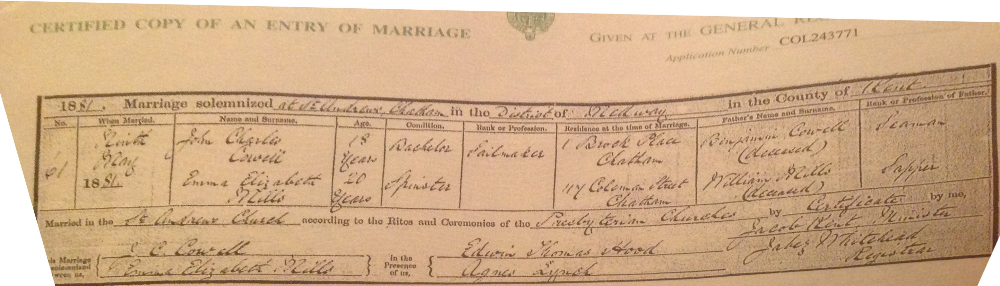
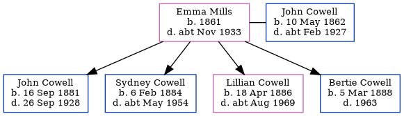

Emma Elizabeth Cowell (née Mills) 1861 - c1933
[ Home ] | [ Calendar ] | [ Surnames Index ] | [ Family History ]Emma Mills, the wife of John Charles Cowell (the second cousin three-times-removed on the mother's side of Nigel Horne), was born in Chatham, Kent, England in 1861<span class="citation">1,2</span> and married John (a police constable with whom she had 4 children: <a href="I1529.html">John Francis</a>, <a href="I1530.html">Sydney James Henry</a>, <a href="I1531.html">Lillian Eleanor</a> and <a href="I1532.html">Bertie Charles</a>) in Chatham on May 9, 1881<span class="citation">4</span>.</p><p>Throughout her life, she lived on 71 Victoria Road, Willesden, London, England on Apr 5, 1891<span class="citation">1</span>; and on 28 Claremont Road, Kilburn, London on Mar 31, 1901<span class="citation">2</span>, on Apr 2, 1911<span class="citation">5</span> and on Jun 19, 1921<span class="citation">6</span>. <p>She died <i>c.</i> Nov 1933 in Willesden<span class="citation">3</span>.
Children
- John Francis was born on Sep 16, 1881
- Sydney James Henry was born on Feb 6, 1884
- Lillian Eleanor was born on Apr 18, 1886
- Bertie Charles was born on Mar 5, 1888
Citations
- 1891 England, Wales & Scotland Census - Findmypast (was age 30 and the wife of the head of the household)
- 1901 England, Wales & Scotland Census - Findmypast (was age 40 and the wife of the head of the household)
- England & Wales deaths 1837-2007 - Findmypast
- England & Wales marriages 1837-2008 - Findmypast
- 1911 Census for England & Wales - Findmypast (was age 50 and the wife of the head of the household)
- 1921 Census Of England & Wales - Findmypast (was age 60 and the wife of the head of the household)
Media
John Cowell - Emma Mills - marriage certificate

1911 Census for England & Wales - GBC/1911/RG14/06995/0873/2
England & Wales deaths 1837-2007 - BMD/D/1933/4/AZ/000190/037
Family Tree
Generated by Ged2Site. Last updated on Jul 20, 2025